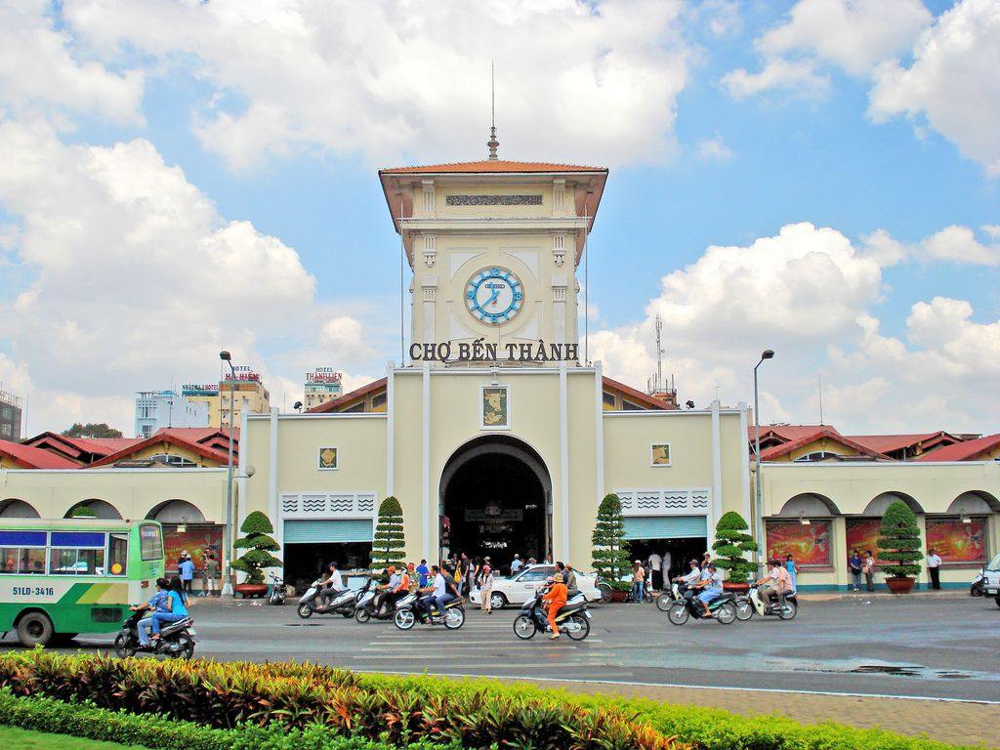
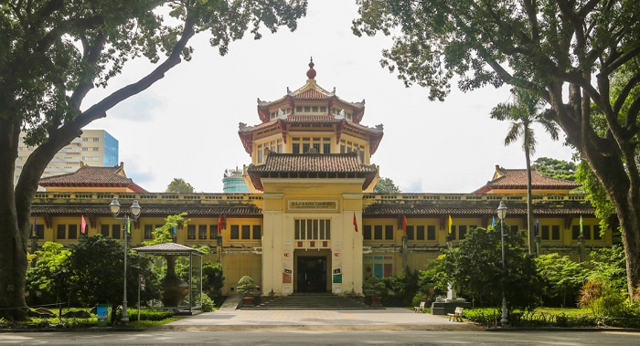

Một số địa điểm du lịch nổi tiếng tại Sài Gòn
Nhắc đến Sài Gòn, người ta sẽ nghĩ ngay đến một thành phố náo nhiệt, sầm uất ngay cả khi đêm xuống. Không chỉ là trung tâm kinh tế lớn nhất cả nước, nơi đây còn được biết đến như là thiên đường vui chơi hàng đầu với đủ các loại hình. Sau khi nghe chúng tôi tiết lộ hàng loạt địa điểm du lịch Sài Gòn sau đây, hẳn bạn sẽ hiểu vì sao nó sôi động và khiến ai cũng háo hức và tò mò đến vậy?
MỤC LỤC
1. Nhà thờ Đức Bà - Biểu tượng của thành phố
- Địa chỉ: Số 1 Công xã Paris, phường Bến Nghé, thuộc Quận 1, thành phố Hồ Chí Minh
- Giờ mở cửa tham khảo: 8:30 – 10:30 và 14:30 – 15:30 (Từ thứ 2 đến thứ 6)
- Giá vé tham khảo: Miễn phí
Nhà thờ Đức Bà là một trong những địa điểm du lịch Sài Gòn nổi tiếng mà bất kỳ du khách nào đến đây cũng phải ghé thăm. Nhà thờ này còn có cái tên khác là Nhà thờ chính tòa Đức Bà Sài Gòn hay còn gọi là Vương cung thánh đường chính tòa Đức Mẹ Vô nhiễm Nguyên tội.

Công trình này có thiết kế vô cũng đặc biệt. Nội thất bên trong bao gồm một lòng chính, hai lòng phụ và còn có thêm 2 dãy nhà nguyện. Sức chứa của toàn bộ thánh đường có thể lên tới 1200 người.
Nếu bạn đang tìm kiếm các địa điểm du lịch ở Sài Gòn thì Nhà thờ Đức Bà chắc chắn sẽ là điểm đến mà bạn không nên bỏ lỡ. Kiến trúc của công trình cực kỳ độc đáo với sự kết hợp của phong cách Roman và Gothic tuyệt đẹp. Với những người thuộc giáo phận Sài Gòn, công trình này thật sự là một biểu tượng đáng tự hào. Xung quanh địa điểm du lịch Sài Gòn này là một khuôn viên rộng lớn với nhiều cây xanh, giúp cho bạn thỏa sức chụp ảnh “sống ảo”.
2. Dinh Độc Lập - Hội trường Thống Nhất
- Địa chỉ: Số 135 đường Nam Kỳ Khởi Nghĩa, thành phố Hồ Chí Minh
- Giờ mở cửa tham khảo: 7:30 – 11:00 và 13:00 – 16:000 tất cả các ngày trong tuần
- Giá vé tham khảo: Từ 3.000 – 30.000 VNĐ/người/lần tùy vào từng đối tượng du khách
Nếu bạn đang tìm kiếm địa điểm du lịch Sài Gòn ban ngày gắn liền với những văn hóa, lịch sử của dân tộc thì Dinh Độc Lập sẽ là một gợi ý tuyệt vời dành cho bạn. Đây là công trình nổi tiếng tại Sài Gòn, trường tồn qua cuộc kháng chiến chống Mỹ cứu nước của dân tộc.
Dinh Độc Lập cũng là một trong những địa điểm du lịch Sài Gòn được xếp vào danh sách di tích đặc biệt cấp quốc gia. Nếu có dịp ghé thăm thành phố mang tên Bác, du khách nên dừng chân tại đây để được trải nghiệm, khám phá công trình độc đáo này.

3. Chợ Bến Thành Quận 1 - Khu chợ sầm uất bậc nhất Sài Gòn
- Địa chỉ: Phường Bến Thành, Quận 1, Thành phố Hồ Chí Minh, Việt Nam
- Giờ mở cửa tham khảo: 7:00 – 19:00
- Giá vé tham khảo: Miễn phí
Một trong những địa điểm du lịch Sài Gòn được nhiều du khách check-in trong chuyến đi của mình đó chính là Chợ Bến Thành. Đây là khu chợ tọa lạc tại trung tâm thành phố, 4 mặt đều giáp với những tuyến đường lớn nên rất thuận tiện cho việc di chuyển. Với những tín đồ mua sắm thì đây càng là điểm đến không thể bỏ lỡ.
Tại đây, du khách có thể lựa chọn cho mình hàng trăm mặt hàng đa dạng từ truyền thống đến hiện đại. Đây cũng là một trong những địa điểm du lịch Sài Gòn giúp bạn có thể thoải mái thưởng thức những món ăn truyền thống với mức giá rẻ. Ngoài ra, bạn còn có thể mua được nhiều đồ dùng về làm quà sau chuyến đi của mình.
4. Bưu điện Thành phố Hồ Chí Minh - Địa điểm check-in Sài Gòn đẹp, ấn tượng
- Địa chỉ: Phường Bến Thành, Quận 1, Thành phố Hồ Chí Minh, Việt Nam
- Giờ mở cửa tham khảo: 7:00 – 19:00
- Giá vé tham khảo: Miễn phí
Bưu điện Thành phố Hồ Chí Minh là một trong những địa điểm du lịch Sài Gòn nổi tiếng. Công trình có kiến trúc vô cùng độc đáo, mỗi năm thu hút hàng trăm nghìn lượt khách trong và ngoài nước đến tham quan.

Công trình này được xây dựng 5 năm, từ năm 1886 đến năm 1891. Kiến trúc sư nổi tiếng thiết kế cho công trình Bưu điện này đó chính là Gustave Eiffel – người Pháp. Lớp sơn vàng đặc trưng của địa điểm này cũng giúp cho bạn có được những tấm hình check-in tuyệt đẹp.
Từng chi tiết bên trong của địa điểm du lịch Sài Gòn này đều khiến cho du khách phải ngỡ ngàng bởi vẻ đẹp tinh tế. Phong cách thiết kế độc đáo từ những mái nhà, hệ thống ô cửa mái vòm, sàn gạch… Đây thật sự là một địa điểm du lịch tại Sài gòn mà bạn không nên bỏ lỡ trong chuyến đi của mình.
5. Tòa nhà cao nhất Việt Nam - Landmark 81
- Địa chỉ: Số 720A Điện Biên Phủ, Quận Bình Thạnh, Thành phố Hồ Chí Minh
- Giờ mở cửa tham khảo: 9:30 - 22:00
- Giá vé tham khảo: Miễn phí
Tòa nhà Landmark 81 là một trong những dự án lớn của Vingroup tại Thành phố Hồ Chí Minh. Công trình này có chiều cao lên tới 470m – hiện nay, đây là tòa nhà cao nhất tại Việt Nam.
Landmark 81 được xem là một địa điểm du lịch Sài Gòn lý tưởng. Tại đây, bạn có thể thoải mái vui chơi với đa dạng các dịch vụ tiện ích, nhu cầu nghỉ dưỡng, vui chơi. Trong tòa nhà này có trung tâm thương mại Vincom Center Landmark 81 giúp cho bạn thoải mái mua sắm với những thương hiệu hàng đầu trên thế giới.
Bên cạnh đó, rất nhiều những dịch vụ vui chơi giải trí mang đến cho bạn trải nghiệm thư giãn tuyệt vời như: Rạp chiếu phim CGV, sân băng Vincom Ice Rink… Tại địa điểm du lịch Sài Gòn này, bạn còn có thể ghé qua 30 nhà hàng với hàng nghìn món ăn hấp dẫn từ 5 châu lục.
Tòa nhà Landmark 81 còn được xem là địa điểm nghỉ dưỡng tuyệt vời cho những chuyến công tác tại Sài Gòn. Khách sạn Vinpearl Landmark 81, Autograph Collection với hệ thống phòng nghỉ sang trọng, tiện nghi, view toàn cảnh sông Sài Gòn…hứa hẹn sẽ mang đến cho bạn trải nghiệm nghỉ dưỡng đẳng cấp tại thành phố này.
Đến với địa điểm du lịch Hồ Chí Minh nổi tiếng này, du khách đừng quên ghé 3 tầng lầu cao nhất để có được những trải nghiệm dịch vụ tuyệt vời, ngắm nhìn toàn cảnh thành phố mang tên Bác từ độ cao bậc nhất.
6. Nhà hát Lớn Thành Phố
- Địa chỉ: Số 7 đường Công Trường Lam Sơn, phường Bến Nghé, Quận 1, thành phố Hồ Chí Minh
- Giờ mở cửa tham khảo: 9:00 – 16:30 (ngày thường) và 9:00 – 12:00 (cuối tuần)
- Giá vé tham khảo: Khoảng 700.000 VNĐ/người tùy vào các sự kiện, chương trình biểu diễn
Nếu du khách đang tìm kiếm một địa điểm du lịch tại Sài Gòn với những màn biểu diễn nghệ thuật chuyên nghiệp như: Kịch nói, cải lương, opera,… thì nhà hát lớn thành phố Hồ Chí Minh được xem là điểm đến du lịch lý tưởng bậc nhất. Đây cũng là công trình có kiến trúc độc đáo hàng đầu tại Việt Nam hiện nay.
Địa điểm du lịch Sài Gòn này có diện tích lên tới 2016 m2, công trình được thiết kế bởi nhiều kiến trúc sư nổi tiếng. Công trình không chỉ thể hiện được sự uy nghi, hoành tráng bên ngoài mà còn cho thấy sự tân tiến, đầy đủ âm thanh, ánh sáng hiện đại bên trong.
Du khách đến tham quan có thể xem trước lịch trình biểu diễn của nhà hát, tại đây, với sức chứa khoảng 1800 người, bạn có thể cùng gia đình thưởng thức những màn biểu diễn chuyên nghiệp của các đoàn nghệ thuật trong và ngoài nước.
7. Bảo tàng Lịch sử Thành phố Hồ Chí Minh
- Địa chỉ: Số 2 đường Nguyễn Bỉnh Khiêm, phường Bến Nghé, Quận 1, thành phố Hồ Chí Minh
- Giờ mở cửa tham khảo: 8:00 – 11:30 và 13:30 – 16:30 (Từ thứ Ba đến Chủ nhật hằng tuần)
- Giá vé tham khảo: 1.000 VNĐ/trẻ em, 2.000 VNĐ/người lớn và 15.000 VNĐ/du khách nước ngoài
Những địa điểm du lịch ở Sài Gòn gắn liền với lịch sử dân tộc hiện đang thu hút nhiều lượt khách trong và ngoài nước tham quan. Bảo tàng lịch sử Việt Nam là địa điểm du lịch Sài Gòn nổi tiếng được xây dựng từ năm 1929. Tiền thân của công trình này đó chính là Viện Bảo tàng Blanchard de la Brosse.
Tại điểm du lịch này, du khách có thể thoải mái chiêm ngưỡng về các hiện vật có giá trị lịch sử. Hiện nay, bảo tàng đang lưu giữ tới hàng chục ngàn hiện vật, 25.000 sách báo và nhiều tài liệu quý. Bên cạnh việc tham quan, khám phá, nhiều du khách đến đây để có thêm hiểu biết, kiến thức về khảo cổ học, sử học, dân tộc học… Bảo tàng Lịch sử Việt Nam thật sự là một địa điểm du lịch lý tưởng cho những ai yêu thích lĩnh vực này.
8. Bảo tàng Phụ Nữ Nam Bộ - điểm du lịch văn hóa độc đáo tại Sài Gòn
- Địa chỉ: Số 202 đường Võ Thị Sáu, phường 7, Quận 3, thành phố Hồ Chí Minh
- Giờ mở cửa tham khảo: 8:00 – 11:30 và 13:30 – 17:30
- Giá vé tham khảo: 30.000 VNĐ/người lớn
Ghé thăm Bảo tàng Phụ Nữ Nam Bộ, du khách sẽ được khám phá, trải nghiệm với rất nhiều hiện vật, hình ảnh, tư liệu gắn liền với bóng dáng của người phụ nữ Việt Nam. Tiền thân của địa điểm du lịch Sài Gòn này là Nhà truyền thống phụ nữ Nam Bộ - công trình được xây dựng với ý nghĩa giáo dục lòng yêu nước cũng như giữ gìn những truyền thống văn hóa tốt đẹp của người phụ nữ.

Hiện nay, khu trưng bày của Bảo tàng Phụ Nữ Nam Bộ có tổng diện tích lên tới 3.162 m2, có 8 phòng giới thiệu hiện vật. Bên cạnh đó, tại đây còn có phòng tưởng niệm của chủ tịch Hồ Chí Minh, lưu giữ những trang phục truyền thống của người phụ nữ Việt. Nếu bạn đang tìm kiếm địa điểm vui chơi ở Sài Gòn thì đây cũng có thể xem là một gợi ý thú vị.
9. Bến Nhà Rồng – Bảo tàng Hồ Chí Minh
- Địa chỉ: Số 1 Nguyễn Tất Thành, Phường 12, Quận 4, Thành phố Hồ Chí Minh
- Giờ mở cửa tham khảo: 7:00 – 11:30 và 13:30 – 17:00 (Từ Thứ Ba đến Chủ nhật hàng tuần)
- Giá vé tham khảo: 2.000 VNĐ/lượt
Một địa điểm du lịch Sài Gòn lưu giữ nhiều kỷ niệm, dấu ấn và hình ảnh của Chủ tịch Hồ Chí Minh vĩ đại đó là bến Nhà Rồng. Công trình này là chứng nhân lịch sử cho cuộc kháng chiến chống Pháp và chống Mỹ của dân tộc ta.
Hiện nay, du khách đến tham quan điểm du lịch này có thể ngắm nhìn rất nhiều hiện vật, tài liệu liên quan đến cuộc đời của Hồ Chí Minh. Đây cũng là một trong các địa điểm du lịch quanh Sài Gòn lý tưởng giúp cho bạn có thể hiểu hơn về lịch sử dân tộc, khơi gợi tình yêu với quê hương, Tổ quốc trong mỗi người Việt.
10. Khu du lịch Suối Tiên - Địa điểm vui chơi hot nhất Sài Gòn
- Địa chỉ: 120 Xa lộ Hà Nội, phường Tân Phú, Quận 9, thành phố Hồ Chí Minh
- Giờ mở cửa tham khảo: 6:30 – 22:00
- Giá vé tham khảo: 120.000 VNĐ/người lớn, 60.000 VNĐ/trẻ em từ 1 – 1.4m, trẻ em dưới 1m miễn phí
Một trong những địa điểm đang hot ở Sài Gòn mà bạn không nên bỏ lỡ trong chuyến đi của mình đó chính là khu du lịch Suối Tiên. Đây là một địa điểm du lịch Sài Gòn tích hợp nhiều hình thức vui chơi giải trí độc đáo giúp cho bạn thoải mái vui chơi cùng gia đình và người thân.
Điều đáng nói hơn, các hình thức đều được tái hiện, xây dựng dựa trên những câu chuyện thần thoại, truyền thuyết như: Sơn Tinh – Thủy Tinh, Lạc Long Quân – Âu Cơ, Vua Hùng,… Đến với điểm du lịch này, bạn cũng sẽ được khám phá thêm về những câu chuyện văn hóa độc đáo.
Ngoài ra, du khách sẽ cực kỳ thích thú với rất nhiều trò chơi độc đáo như: Đường đua xe siêu thần tốc, xem phim 4D, 9D, phi thuyền đại chiến các vì sao,… Các trò chơi phù hợp với nhiều đối tượng du khách khác nhau sẽ giúp cho bạn và gia đình có được giây phút cực kỳ sảng khoái, thư giãn.
11. Thảo Cầm Viên - Khu bảo tồn động - thực vật lớn của thành phố
- Địa chỉ: Số 2 đường Nguyễn Bỉnh Khiêm, phường Bến Nghé, Quận 1, thành phố Hồ Chí Minh
- Giờ mở cửa tham khảo: 7:00 – 17:30
- Giá vé tham khảo: 60.000 VNĐ/người cao trên 1.3m, 40.000 VNĐ/người cao từ 1 – 1.3m, trẻ em dưới 1m hoàn toàn miễn phí
Với những du khách là trẻ em thì được cùng bố mẹ đến với sở thú là chuyến đi tuyệt vời nhất. Thảo Cầm Viên là một trong những sở thú nổi tiếng tại Thành phố Hồ Chí Minh. Tại đây có hơn 1000 cá thể động vật và hơn 2000 loài hoa, cây cảnh độc đáo giúp cho bạn thoải mái tham quan.

Ngoài ra, địa điểm du lịch Sài Gòn này còn có rất nhiều trò chơi độc đáo như: Xe điện, máy bay, câu cá, ngựa quay, xe lửa…. Những trò chơi này cực kỳ thích thú đối với trẻ em, chắc chắn đây sẽ là địa điểm du lịch lý tưởng nếu chuyến đi của bạn có trẻ nhỏ. Ngoài ra, đây cũng là điểm check-in tuyệt đẹp để bạn lưu lại những khoảnh khắc khi đến với thành phố này.
12. Công viên nước Đầm Sen - Địa điểm vui chơi giải trí hè được yêu thích nhất
- Địa chỉ: Số 3 Hòa Bình, phường 3, Quận 11, thành phố Hồ Chí Minh
- Giờ mở cửa tham khảo: 9:00 - 18:00 (Thứ Hai - Thứ Bảy), 8:30 - 18:00 (Chủ nhật, Lễ)
- Giá vé tham khảo: 100.000 VNĐ/người lớn, 60.000 VNĐ/trẻ em, trọn gói 240.000 VNĐ/người lớn, 150.000 VNĐ/trẻ em (Áp dụng với Đầm Sen Khô); 180.000 VNĐ/người lớn, 100.000 VNĐ/trẻ em, trẻ em dưới 1m miễn phí ( Áp dụng với Đầm Sen Nước)
Những ngày hè, thời tiết tại Sài Gòn khá nóng bức, nếu bạn đang tìm kiếm các địa điểm du lịch Sài Gòn giải nhiệt thì công viên giải trí Đầm Sen sẽ là một lựa chọn đáng cân nhắc.
Công viên này khá lớn với tổng diện tích lên tới 50ha, được phân tách thành 2 khu vực đó chính là Đầm Sen Khô và Đầm Sen Nước. Đây được xem là một thiên đường giải trí với rất nhiều những trò chơi đa dạng, độc đáo giúp cho bạn thoải mái vui chơi, giải nhiệt khi du lịch tại thành phố Hồ Chí Minh.
Địa điểm du lịch Sài Gòn này có tới 36 thiết bị trò chơi dưới nước hiện đại. Bên cạnh đó, du khách sẽ cực kỳ thích thú với hồ tạo sóng có diện tích 3000 m2 như một bãi biển nhân tạo mang đến cho bạn những trải nghiệm tuyệt vời.
Ngoài ra, khi đến với địa điểm này, bạn cũng sẽ được vui chơi với nhiều trò chơi trên cạn mang đến cảm giác nhẹ đến mạnh. Công viên Đầm Sen sẽ là một địa điểm du lịch Sài Gòn thích hợp với nhiều đối tượng, độ tuổi khác nhau.
13. Bảo tàng tranh 3D Artinus - Sống ảo 1001 góc đẹp, độc đáo
- Địa chỉ: Số 02 – 04 đường số 9, KDC Him Lam, phường Tân Hưng, Quận 7, thành phố Hồ Chí Minh
- Giờ mở cửa tham khảo: 9:00 – 17:00 (Từ Thứ Hai đến Thứ Sáu), 9:00 – 19:00 Thứ Bảy, Chủ nhật và những ngày lễ
- Giá vé tham khảo: 200.000 VNĐ/người
Bảo tàng tranh 3D Artinus là một trong những địa điểm du lịch Sài Gòn hấp dẫn bậc nhất. Tại đây, bạn có thể ghi lại cho mình những bức hình cực kỳ độc đáo, thú vị không khác gì những địa điểm thực tế.
Thiết kế của bảo tàng 3D Artinus như một thế giới ảo thực thụ. Cụ thể, tại đây có 9 khu vực với 9 chủ đề khác nhau, bạn sẽ được trải nghiệm không khác gì thực tế ở các chủ đề từ nước, thực vật, đến chủ đề thần tiên, nghệ thuật… Những bức tranh 3D vô cùng chân thật khiến cho du khách mê mẩn với địa điểm du lịch Sài Gòn này. Bảo tàng tranh 3D Artinus hứa hẹn sẽ giúp cho bạn có được những giây phút tuyệt vời khi ghé thăm thành phố mang tên Bác.
Để có được chuyến đi thuận tiện nhất với các địa điểm du lịch ở Sài Gòn, du khách nên lựa chọn cho mình khách sạn nghỉ dưỡng tại trung tâm thành phố. Vinpearl Landmark 81, Autograph Collection tọa lạc tại vị trí trung tâm, sở hữu hệ thống phòng nghỉ tiện nghi, các dịch vụ nghỉ dưỡng hàng đầu hứa hẹn sẽ giúp cho bạn có được giây phút thư giãn bậc nhất. Khách sạn này còn tọa lạc ở vị trí trung tâm, thuận tiện cho du khách lên lịch trình di chuyển đến nhiều địa điểm du lịch Sài Gòn khác.
14. Địa đạo Củ Chi
- Địa chỉ: Tỉnh lộ 15, ấp Phú Hiệp, xã Phú Mỹ Hưng, huyện Củ Chi, thành phố Hồ Chí Minh
- Giờ mở cửa tham khảo: 7:00 – 17:00
- Giá vé tham khảo: 20.000 VNĐ/người Việt, 110.000 VNĐ/du khách nước ngoài
Những địa điểm du lịch gần Sài Gòn cũng được du khách tìm kiếm để có những chuyến đi ngắn ngày hay trải nghiệm vào dịp cuối tuần. Địa đạo Củ Chi hiện là một trong những điểm du lịch Sài Gòn gắn liền với lịch sử thu hút đông đảo du khách tham quan mỗi ngày.
Điểm du lịch này trước đây là hệ thống phòng thủ, căn cứ kháng chiến của quân và dân Việt Nam. Hiện nay, tại đây vẫn còn lưu giữ rất nhiều những chiến tích lịch sử, những hiện vật, công trình gắn liền với một thời đấu tranh hào hùng của quân và dân ta. Du khách có thể tận mắt thấy kho chứa, nhà bếp, phòng làm việc… được đặt ở dưới hầm – nơi làm việc của cán bộ, bộ đội lúc bấy giờ.
Hiện nay, Địa đạo Củ Chi là một trong những di tích quốc gia nổi tiếng và là địa điểm du lịch Sài Gòn được nhiều du khách lựa chọn cho chuyến đi của mình.
15. Khu du lịch sinh thái Bình Quới
- Địa chỉ: 1147 Bình Quới, phường 28, Quận Bình Thạnh, thành phố Hồ Chí Minh
- Giờ mở cửa tham khảo: 9:00 – 17:00
- Giá vé tham khảo: 130.000 VNĐ/người lớn, 90.000 VNĐ/trẻ em dưới 1m
Nếu bạn đang có nhu cầu tìm kiếm các địa điểm du lịch gần Sài Gòn thì khu du lịch sinh thái Bình Quới sẽ là một điểm đến thú vị. Khu du lịch này chỉ cách trung tâm thành phố Hồ Chí Minh khoảng 8km, rất thuận tiện cho việc di chuyển và thực hiện những chuyến đi cuối tuần.
Tại đây, bạn có thể trải nghiệm nhiều hoạt động thú vị như một buổi dã ngoại. Bên cạnh đó, khu du lịch Bình Quới còn có nhiều dịch vụ đa dạng như buffet, nhà nghỉ gia đình, nhà chòi… giúp cho bạn thoải mái vui chơi và nghỉ ngơi.
Đến với địa điểm du lịch Bình Quới, du khách như được trở về với chốn bình yên của làng quê Nam Bộ. Tại đây, những hình ảnh thân thuộc đều được tái hiện thực tế như: cầu khỉ, xuồng ba lá, chiếc lu nước. Địa điểm du lịch Sài Gòn này cũng hấp dẫn du khách tham quan bởi nhiều trò chơi thú vị như: Chèo thuyền, câu cá, tô tượng, trò chơi xích đu…